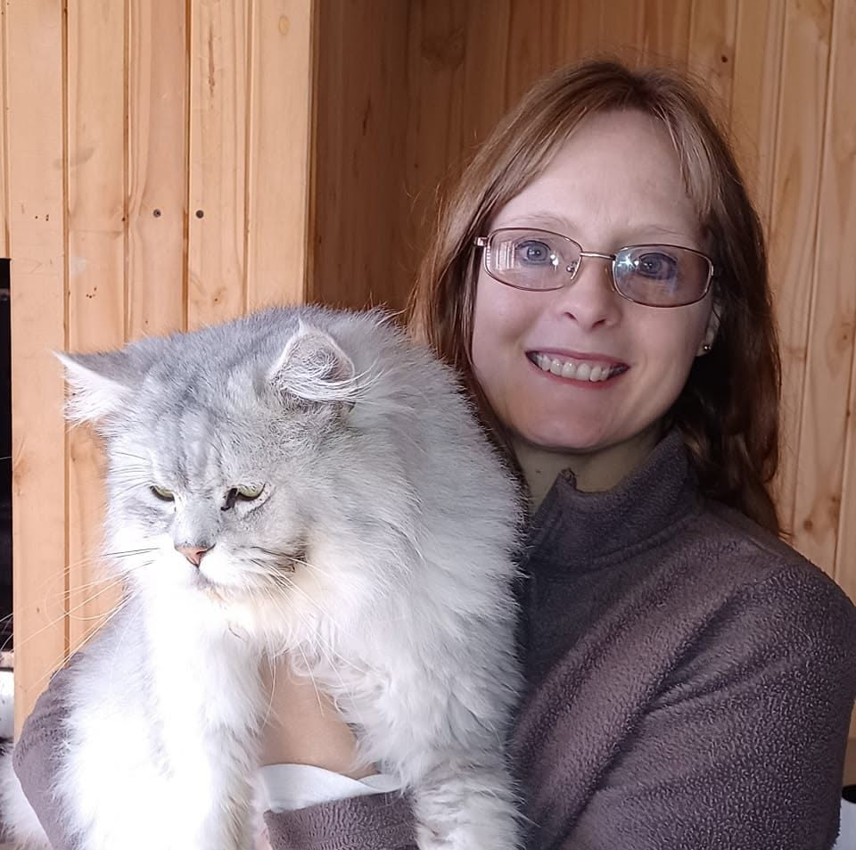
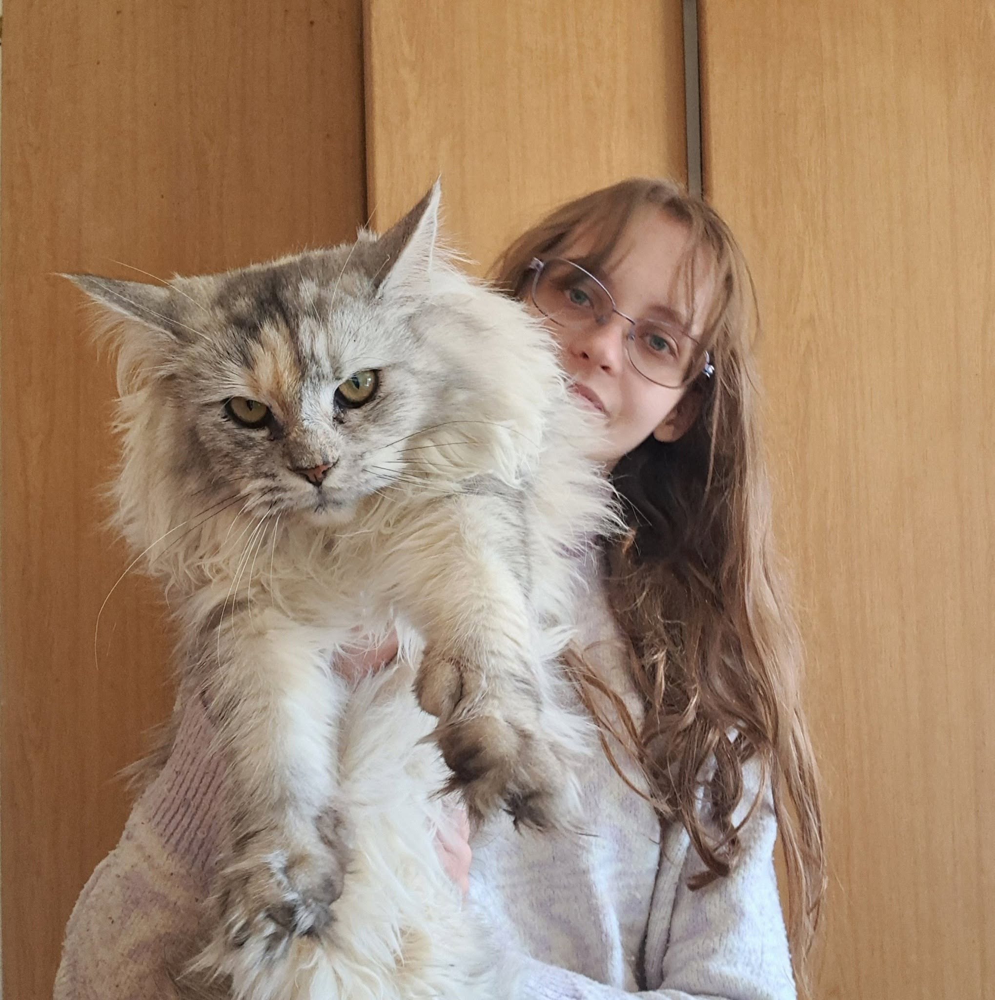
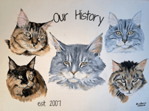

Meet the family behind Sparkle Coon Cattery

Owner • Primary Caregiver
Annelie is the owner and heart of Sparkle Coon. She is responsible for the daily care and wellbeing of our cats. She is at the centre of everything we do. As well as the one to make the final decisions.

PHOTOGRAPHY • GENETICS • CLIENT RELATIONS
Michelle manages much of the communication with prospective and current kitten families, including enquiries through WhatsApp, Facebook, and Instagram.
She is passionate about feline genetics—particularly Maine Coon colour genetics—and enjoys continually researching the breed to expand her knowledge.
Michelle is also the photographer behind Sparkle Coon, capturing the personalities of our cats and kittens through photos and helping share their journey with future families.
She also helps with the wellbeing of our cats, monitoring them when her mother is busy with her day job.
A FAMILY EFFORT
Although Sparkle Coon is led by Annelie and Michelle, it is truly a family effort. Every member of our family contributes in their own way, whether it's helping care for the cats, assisting with daily tasks, offering extra hands when needed, or simply giving our cats the love and attention they deserve.
Together, we share the same goal: to raise healthy Maine Coons and provide lifelong support to the families who welcome a Sparkle Coon kitten into their homes.
MORE ABOUT OUR CATTERY
Our cats live in a cattery built like an extension of the house, designed specifically with their safety and welfare in mind.
Every Sparkle Coon kitten is raised in our maternity ward, which is attached to our home. This allows us to monitor and care for mothers and kittens around the clock while giving them a safe environment during their time there.
Our cats also have access to a medium-sized garden once a week or more, where they can play and explore. The garden has very tall walls to help prevent our cats from escaping our premises.
The garden is also something we are continually working on, as Stephan enjoys adjusting and improving it.
We are still not finished renovating. In the future, we would like to add catios attached to the cattery, giving our cats even more access to fresh air and sunlight.
OUR HISTORY
Our journey began in 2007 when we got our first breeding pair from Lenthall Cattery, Blue Diamond and Georgie Girl.
We also welcomed Roselyn, Daisy, Rex and Lily into our cattery during those early years.
Although these cats played an important part in the beginning of our journey, we no longer retain any of their lines in our cattery today.

A NEW CHAPTER
As our cattery continued to grow, we welcomed Sir Barnaby from the new Lenthall Cattery, following the tragic passing of the original owners.
Barney became a very special part of our history as our first polydactyl Maine Coon. He was a beautiful Blue Tabby and helped introduce us to the naturally occurring polydactyl trait within the breed.
During this period, we also welcomed several other Maine Coons into our cattery, each becoming part of our journey.
Iceland Paris Emperor (Dante)
Red Tabby Bicolour
Kamsky's Russian Zarres (Zoe)
Black Tortoiseshell
Miss Patti Page
Black Tortoiseshell Tabby · Polydactyl
OUR JOURNEY
Over the years, Sparkle Coon has continued to grow and change. What began with our first breeding pair in 2007 gradually developed into the cattery we know today.
Along the way, many different Maine Coons have been part of our journey. Some became part of our breeding program, some left their mark on our lines, and others simply became cherished members of our family.
As the years passed, our cattery continued to evolve. We have learned from the cats that came before them and continued building on the foundation that was created in those early years.
Today, Sparkle Coon remains a family-run cattery, with the same connection to our cats and the same family involvement that has been part of our story from the beginning.
TODAY
Today, Sparkle Coon continues as a family-run Maine Coon cattery, with our cats remaining an important part of everyday family life.
From the first cats who started our journey in 2007 to the cats and kittens who are part of Sparkle Coon today, every generation has contributed something to our story.
Our journey is still continuing, and we look forward to seeing where the next chapters of Sparkle Coon will take us.
Colour
Colours We Produce:
- Black/Black Tabby
- Red/Red Tabby (Males)
- Tortoiseshell (Females)
- Blue/Blue Tabby
- Cream/Cream Tabby (Males)
- Diluted Tortoiseshell (Females)
- Smokes (Black/Blue/Red/Cream/Tortoiseshell/Diluted Tortoiseshell)
- Silver Tabbies (Black/Blue/Red/Cream/Tortoiseshell/Diluted Tortoiseshell)
- High Grade Silver Tabbies (Black/Blue/Red/Cream/Tortoiseshell/Diluted Tortoiseshell)
- With White/ Bicolour (All the colours Above)
Colours We Do Not Produce:
- Pure White
- Red/Red Tabby (Females)
- Cream/Cream Tabby (Females)
We do not breed colours that are not recognised in the breed. Such as Chocolate, Lilac, Cinnamon, Fawn, Colour point. We also do not breed with DBE (Dominant Blue Eyes) as there is a risk of deafness and Waardenburg syndrome. DBE is a Mutation that gives non white spotting cats Blue Eyes.
OUR APPROACH
At Sparkle Coon, we have chosen not to practise Early Spay & Neuter (ESN) on our kittens.
This is a decision we have made based on our own observations, research and priorities for our kittens. Maine Coons are a slow-maturing breed, and we believe allowing our kittens additional time to grow and develop before sterilisation may be beneficial to their overall development.
We also have concerns about potential health considerations associated with very early sterilisation. ESN is practised by some breeders and veterinarians, while other veterinary professionals have reservations about performing sterilisation at such an early age.
Another consideration for us is the limited breed-specific information available regarding the long-term effects of ESN specifically in Maine Coons. We do not feel that there is currently enough Maine Coon-specific evidence for us to confidently make early sterilisation part of our program.
For these reasons, we have chosen an approach that allows our kittens additional time to mature before they are sterilised.
We have nothing against breeders who choose to practise ESN. Different breeders make different decisions based on their experience, veterinary advice and individual breeding programs, and we respect those choices.
For Sparkle Coon, however, our priority is the health and development of our kittens, and this is the approach we feel is right for them.
Our kittens leave us with a sterilisation agreement in place.
Females: Sterilised between 6–8 months.
Males: Sterilised between 6–12 months.
Proof of sterilisation must be provided to Sparkle Coon.
If a family wishes to obtain another kitten from us in the future, proof of the previous kitten's sterilisation is required.
Website made by Michelle van Vuuren